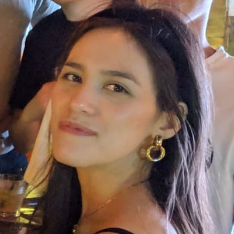

Hannah Gooding
“I am big enough to admit I am often inspired by myself.” - Leslie Knope, Parks and Recreation
Female
London, UK
Hannah Gooding's links
Hannah Gooding's interests
| Favourite color: | Pink |
| Favourite city: | Hong Kong |
| Favourite ice cream flavour: | Chocolate |
| Favourite crisp flavour: | Cheese & onion |
| Style icons: | Hello Kitty, Blair Waldorf and my Granny Pat when she was younger |
| Signature style: | Bright colours and giant Pat Butcher earrings |
| My karaoke song: | Superbass - Nicki Minaj |
| A song I know all the words to: | Paper Bag - Fiona Apple |
| Dream dinner party guests: | Gordon Ramsay, Paris Hilton, Timothée Chalamet, RuPaul, David Mitchell |
| Fears: | Spiders and clowns |
Hannah Gooding's status & mood
Status: I'm applying for Founders & Coders
Mood: Hopeful
 Listening to: Norman Fucking Rockwell - Lana Del Rey
Listening to: Norman Fucking Rockwell - Lana Del Rey
Reading: The Secret History - Donna Tartt
Watching: Bob's Burgers
About Me
I’m a self-confessed (recovering) hoarder and musical lover who was born and raised in London. I’m one of the founding editors of gal-dem magazine, where I was fashion editor for almost three years.
Why I’m applying to Founders & Coders
Working in fast fashion for a number of years eventually made me feel hopeless as there seems to be insurmountable issues with the way the industry currently runs that cannot be reconciled with the impending climate crisis. However, I was inspired to get into coding when I saw there were many tech companies that aim to solve some of the ethical and sustainability issues faced by the today's fast fashion industry.
To name just a few of my inspirations:
- Re-sale apps like Depop have revolutionised the circular economy for apparel
- Rental platforms like Hurr Collective make it possible for people to rent their designer clothes peer-to-peer
- Unmade reduces over-production with their software that allows companies to sell their clothes on a made-to-order basis.
Who I’d Like To Meet
Fashion-tech entrepreneurs, like-minded individuals who want to use tech to make the world a better place.
Fast fashion facts
Here are some scary facts about the impact of fast fashion that inspired me to use my knowledge and skills where I can to make a change in this industry:
“It takes 2720 litres of water to make a t-shirt. That’s how much we normally drink over a 3 year period.” - Fashion Revolution
“190,000 tons of textile microplastic fibres end up in the oceans every year” - Sustain Your Style
“Total greenhouse gas emissions from textiles production, at 1.2 billion tonnes annually, are more than those of all international flights and maritime shipping combined.” - Ellen Macarthur Foundation
“On average [in the UK], people own 115 items of clothing, 30% of which have not been worn during the past year.” - Clothing Sustainability Research Group, Nottingham Trent University
“A survey of 91 fashion brands found that only 12% could demonstrate any action at all towards paying wages to garment works, above the legal minimum” - Fashion Revolution
“Garments are the 2nd highest at-risk product for category for category for modern slavery” - Global Slavery Index
Hannah Gooding's coding journey
My first passage into the world of web development was in ICT class in secondary school. Using Notepad, we had to build a static informational webpage in pairs. My best friend and I wrote ours about a topic we clearly felt very passionate about at the time: punk rock grandads.
Like basically all other teenagers growing up in the 2000s, browsing the Internet was my favourite thing to do. I remember spending hours practicing my HTML skills via tutorials on a website called Lissa Explains It All.
My coding practice soon proved useful to my social status when it became paramount that to be the coolest girl in year 9, you also had to have the snazziest Myspace profile out of all of your friends.
My HTML and CSS skills came in handy again when Myspace was defunct, and I moved my social media goals to becoming Tumblr famous with my many “aesthetic” blogs (it didn’t happen, thankfully).
But alas, when it came to choosing what to study at university I didn’t go for Computer Science, but rather decided to pursue my love for logic and over-thinking by studying Philosophy.
After university, I got straight into doing whatever it took to get into my dream career in fashion, an aspiration I can only attribute to the hours spent playing dress up games online on EverythingGirl and The Doll Palace websites.
Trying to break the fashion industry included doing a lot of unpaid internships until eventually I got my foot in the door with my first full-time job working in garment production. At first I found working in a fast-paced environment with ever-changing trends really exciting. But the more I learned about the supply chain, the more uneasy I felt about the fashion industry’s negative ethical and environmental impact.
Being involved directly in production, I felt I was personally responsible for “fuelling the beast”. But I did see that there were many fashion tech companies springing up aiming to reduce the problems of over-production. With the encouragement of two school friends who are female developers, I decided to look into coding again.
I started the Code First: Girls beginner’s course where I met a fantastic group of other women who wanted to improve their tech skills. Learning about web design reignited my passion for code, and I learned invaluable new skills like responsive web design and version control.
After completing the Code First: Girls course, I found out about Founders & Coders and felt so inspired by the Tech For Better programme. I decided to leave my full-time job and go freelance to give me more time to focus my energy on teaching myself JavaScript, and to work on the FAC prerequisites.
I’ve built this website as part of my FAC application for the Spring 2020 Cohort. As a homage to the websites that sparked my love for coding, I’ve laid this one out like a Myspace profile complete with the very same pixel graphics I used to eagerly splash across my own pages. I also included a profile song, but unlike a decade ago, autoplay is switched off (you’re welcome)!